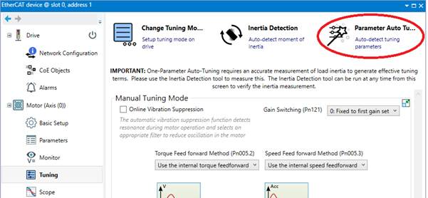
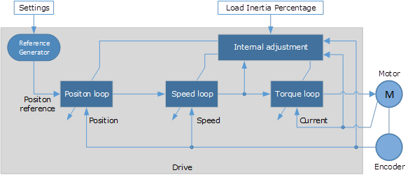
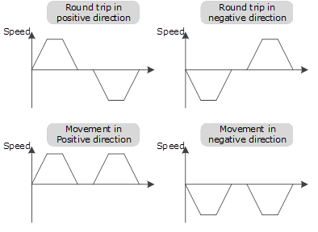
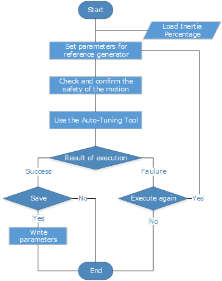
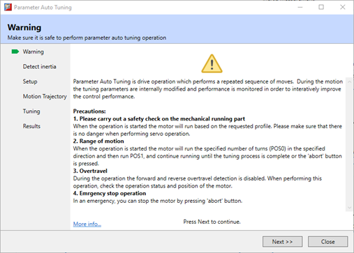
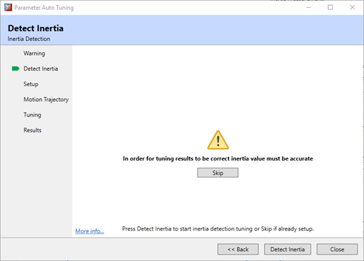
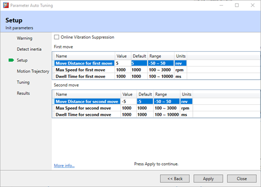
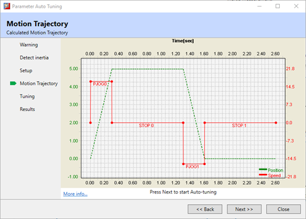
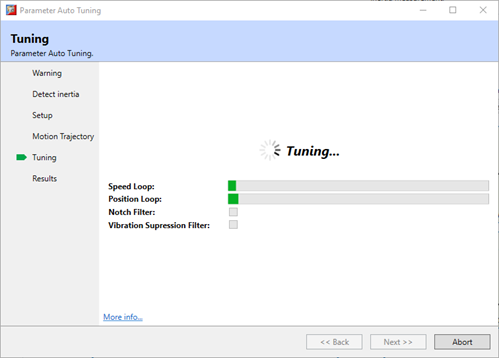
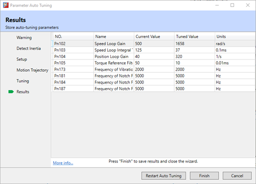

The Parameter Auto-Tuning Tool uses the drives internal position reference generator to exercise the control and then internally adjust the control parameters. This tool is available when in Manual Tuning mode only.

The tool uses the drives internal position reference generator to exercise the control and then internally adjust the control parameters.

|
|
Since the limit function is unavailable when using the tuning tool, please make sure that the movable parts have sufficient travel. |
With the Parameter Auto-Tuning tool, the reference generator plans the position curve and generates the position reference as inputs to the position loop.
The drive will repeatedly run two moves, according to the user setup, until the tuning process is complete. The sequence can be either position/negative or negative/positive.

The sequence for the Parameter Auto-Tuning is shown in the flow diagram below.

The following parameters are automatically adjusted when using the auto-tuning tool.
|
Parameter |
Name |
|
Pn102 |
Speed Loop Gain |
|
Pn103 |
Speed Loop Integral Time |
|
Pn104 |
Position Loop Gain |
|
Pn105 |
Torque Command Filter Time |
|
|
The parameters are not changed when using the Auto-Tuning Tool.
|
At the end of the process there is an option to save (write) the updated parameter values to the Drive.
These parameters are only valid for Manual Tuning operation.
The wizard sequence is:






Applied for the high rigidity (up to 20 times load moment of inertia) equipment.
Applied for the low rigidity (up to 10 times load moment of inertia) equipment.
The number of revolutions is more than 1 rotation, and the rotation speed is higher than 100 rpm.
During operation of the Parameter Auto-Tuning the following functions are disabled:
The use of automatic vibration suppression is an option for the Parameter Auto-Tuning operation but is not enabled outside the process.
|
|
The Parameter Auto-Tuning Tool is unavailable in fully-closed loop control. |